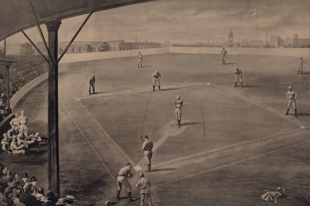

Baseball took center stage during the American Civil War. On both sides of the fight, they would play to distract each other. The men ended up liking the game and bringing it home. From there, the popularity continued to grow. The first official game was played in 1846. About five years later, it was declared America’s pastime, and in 1903, Major League Baseball was officially formed. Fast forward about 60 years to WW1, there were 24 teams in the MLB, some of which are the same teams that we have today. For example, the Chicago Cubs, Cincinnati Reds, Philadelphia Phillies, Pittsburgh Pirates, St. Louis Cardinals, Boston Red Sox, Chicago White Sox, Detroit Tigers, and the New York Yankees. They needed soldiers during the war, so many of the players at the time went off to war. One of whom was Ty Cobb, a Hall of Famer. This was also around the time Babe Ruth began to gain popularity.
After the war ended, people just wanted to have fun and forget the pain the war brought. So, they turned to baseball. Then, of course, WW2 started, and more men were shipped off to fight. However, President Roosevelt did not want baseball to stop altogether because it was a good way for people to, again, forget about the war. This was also when the women's baseball league started; women had already made their mark on baseball. In 1931, Jackie Mitchell struck out Babe Ruth and Lou Gehrig.
In 1947, Jackie Robinson made history as the first African American baseball player in Major League Baseball. He led the way for so many like Roberto Clemente and Hank Aaron. Along with being the first African American player, Jackie Robinson made a big name for himself during the civil rights movement in the 1960’s, with Martin Luther King even stating, “Jackie Robinson made my success possible. Without him, I would never have been able to do what I did.” Baseball has quietly and sometimes not so quietly made a big impact on the world and led the way for so many.
In the 80 years since WW2 ended, people changed. Football gained popularity; people lost interest, views declined, and baseball was considered boring. They needed to make a change. They did just that. In 2023, a pitch clock was added, reducing the overall game time by about 40 minutes. Also in 2023, the base pads increased in size by 3 inches to encourage base stealing. In 2024, due to the increase in base size, there were 3,617 stolen bases, the most since 1914. Because of the pitch clock, there has been an overall increase of 10.5% of viewers.
Fun Fact
On September 8, 1990, pitcher Nolan Ryan was hit in the face by a groundball that was hit by Bo Jackson. He had a bloody lip and jersey, and he still finished the inning. 35 years later, in 2025, Mariners pitcher George Kirby was struck in the face by a comebacker, resulting in a bloody lip.